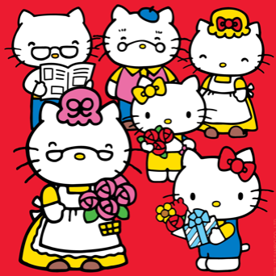

♡キティの家族

★ミミィ（黄色のリボン）
双子の妹。ちょっぴり内気で、はずかしがり屋さん。とっても女のコらしい女のコ。キティと見分けがつくように、右の耳にリボンをつけています。
★パパ（少し大きめの眼鏡をかけている）
家族がたよりにしている、ステキなパパ。ちょっとおとぼけで、ユーモアセンスはバツグン！
★ママ（黄色い被り物）
とっても優しくて、お料理、お掃除、お洗濯が大好きなママ。アップルパイ作りの名人。
★おじいちゃん（丸い眼鏡）
近くに住んでいる。絵をかくことが趣味。物知りで、おもしろい昔話をしてくれます。
★おばあちゃん（ピンクの被り物）
プディング作りが得意。ロッキングチェアにすわって、ししゅうをするのが大好き。